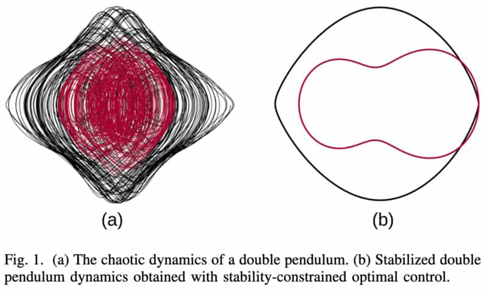

Tractability of Stability-Constrained Trajectory Optimization
The effectiveness of open-loop stable walking has been demonstrated by several authors, however, given the absence of any feedback correction, the control design for open-loop stable walking is nontrivial. Previous attempts have cast the problem of open-loop stability in the framework of optimiza- tion, however, these approaches often encode stability in terms of some physical characteristic of the system, in particular, in terms of some measure of the system’s energy. However, it is often challenging to design a robust indirect measure for stability. Recently, work has been undertaken to allow for direct constraints on stability that constrain the spectral radius of the linearized return map associated with a periodic solution to the system. However, finding the eigenvalues of the return map in the optimization framework is a challenge in its own right. Previous work on this problem has focused primarily on affine and symmetric matrix functions, which lead to a convex optimization program, however, the return map in general does not fit these criteria. Mombaur et. al. [1] address eigenvalue optimization using a Nelder-Mead type direct search method, however, direct search methods do not inform the search with the gradients of the solution landscape, and thus such methods can be prohibitively slow for high degree-of-freedom systems.